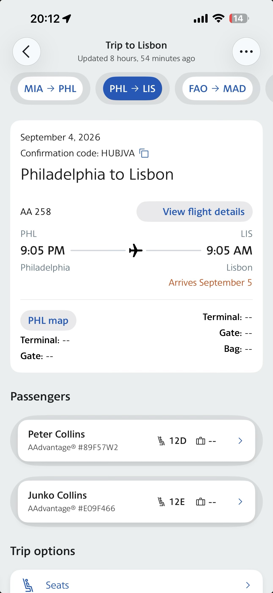
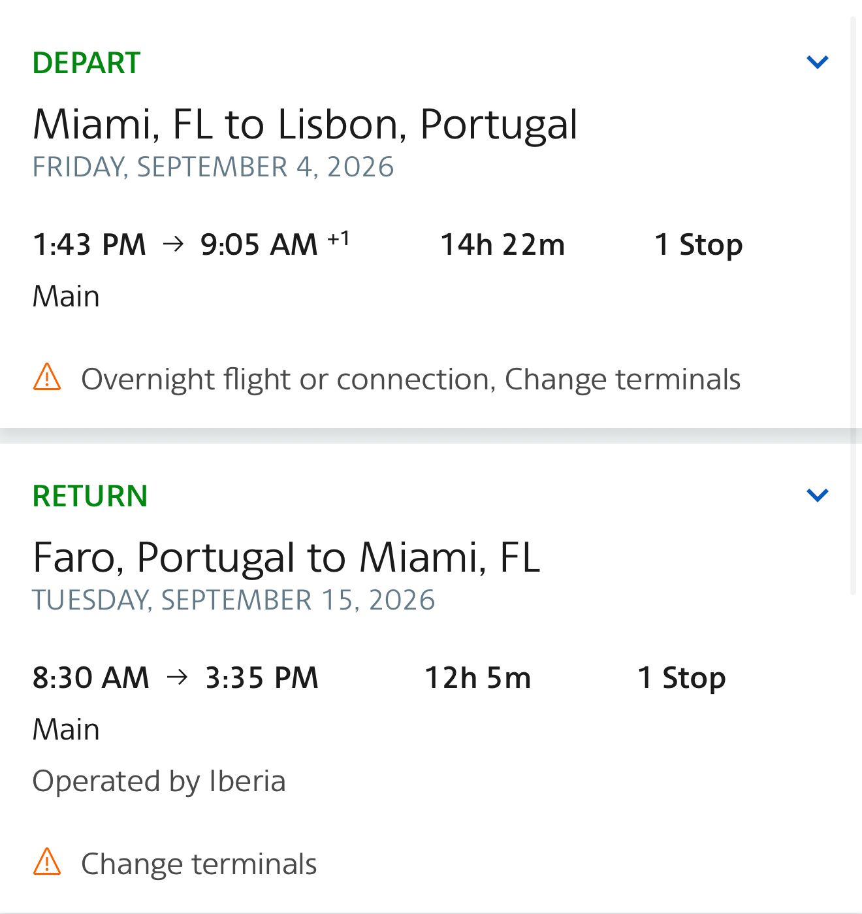
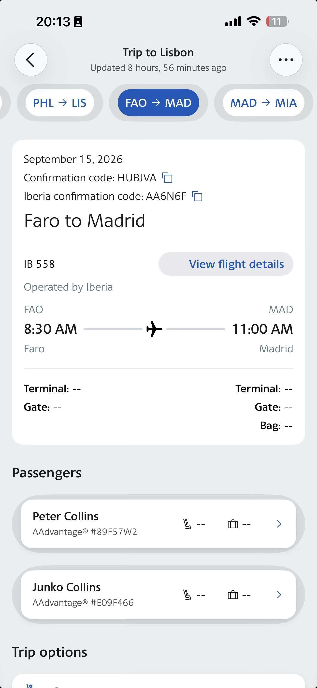

Per & Renee travel to Lisbon on TAP, spend Sep 5–10 in the city, then fly to Amsterdam on Sep 10 before returning home to Orange County on Sep 15. They will not continue to the Algarve or Faro.
MIA→LIS→AMS→SFO→SNA
Outbound · Friday, Sep 4
TAP Air Portugal
Miami (MIA) → Lisbon (LIS)1:43 PM → 9:05 AM +114h 22m · 1 stop · terminal change noted in the itinerary
The screenshot shows the TAP itinerary as a points booking. Confirm the flight number, connection airport and terminal instructions in the TAP app before leaving for Miami.

Saved TAP itinerary reference
Sep 5–10 · Lisbon
Old-city base near Praça da Figueira
Stylish nest: Near Praça da Figueira & Cathedral is the current Airbnb placeholder. It is an entire home/apartment hosted by Hostee for four adults.
Per & Renee leave Lisbon for Amsterdam on Sep 10 and will not travel onward to Faro. Peter & Junko will arrange their own transportation for the Algarve.
The Lisbon-to-Faro rental car has been canceled because Per & Renee are flying to Amsterdam instead. Peter & Junko need to arrange their own transportation; no replacement reservation is recorded here.
Confirm TAP TP670 terminal and gate details before leaving for Lisbon Airport on Sep 10.
Reconfirm Lisbon Airbnb cancellation terms before the Aug 31 deadline.
Peter & Junko: arrange independent transportation to the Algarve.
Coordinate the Algarve days with Peter & Junko Collins.
Saved references
Flight and reservation captures

Flight summary capture

Additional flight note
Some saved captures show earlier or alternate searches, including the now-superseded Faro/United and rental-car plans. The current plan is TAP outbound to Lisbon, TAP TP670 to Amsterdam on Sep 10, and United from Amsterdam to Orange County on Sep 15.
Offline-ready
Add to Home Screen
Open this Portugal page online once after the latest details are loaded. The itinerary, reservation captures and app shell are cached for the iPhone web app.